Galería de reformas de baños en Ermua y comarca
Solo fotos reales de obras de Hakim: sin renders ni imágenes de catálogo. Pulsa una foto para verla ampliada.
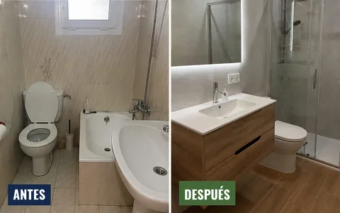
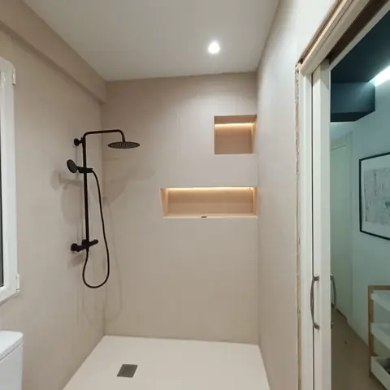
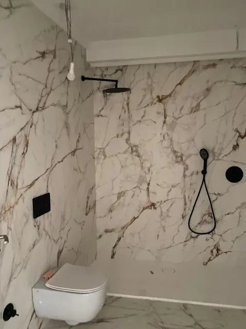
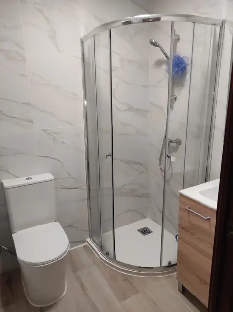
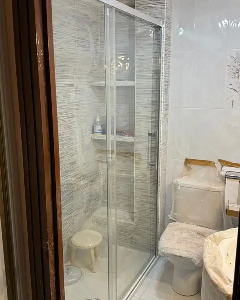
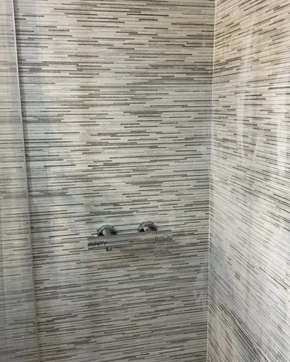
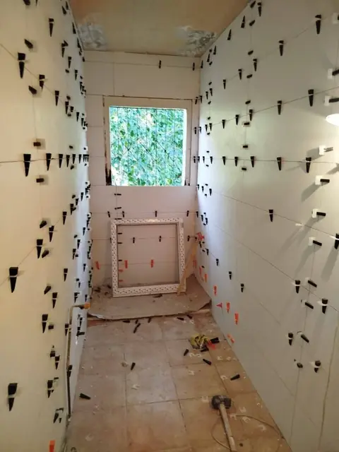
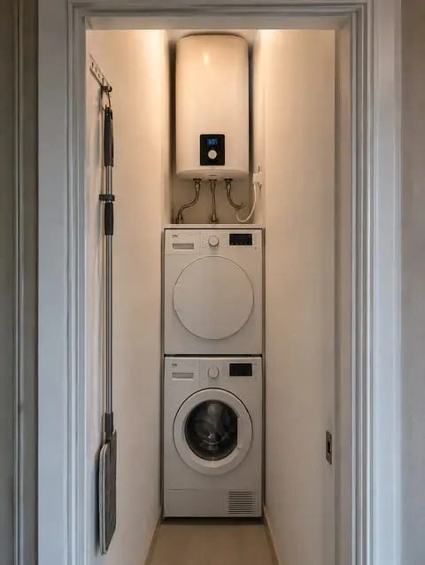
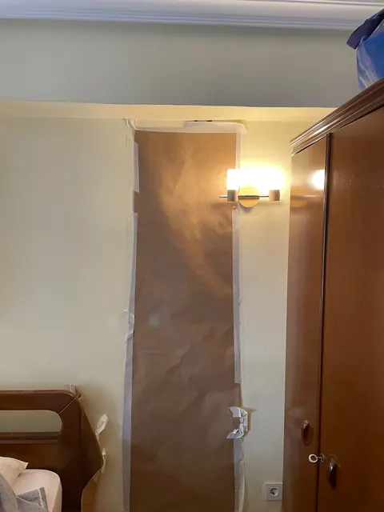
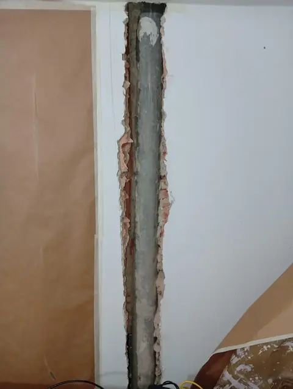
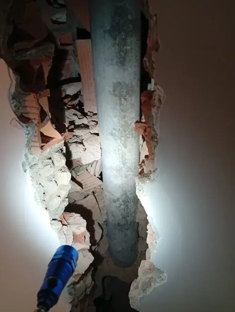
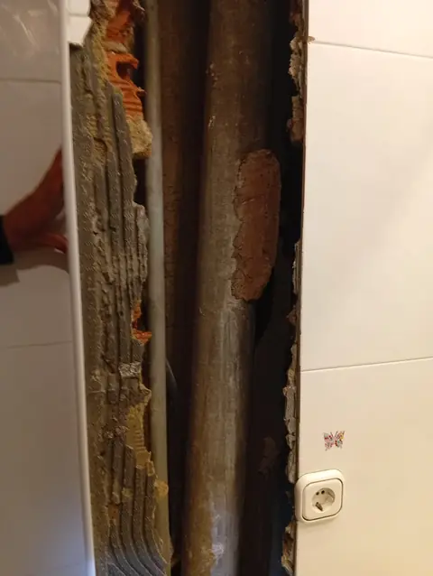
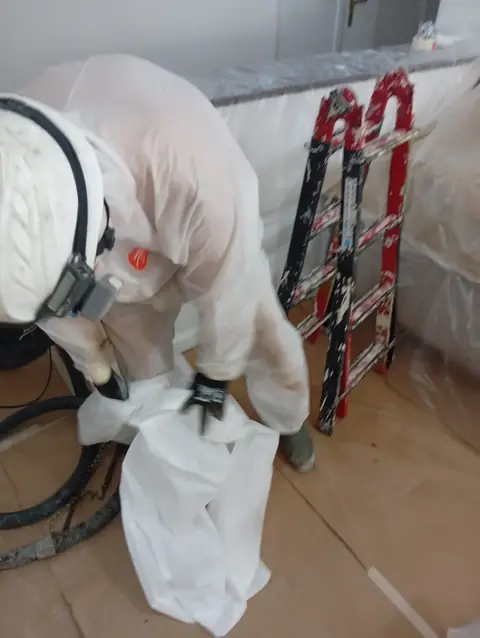
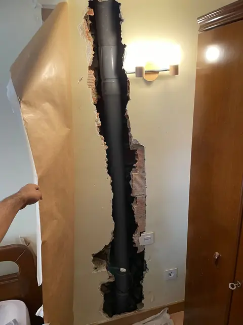
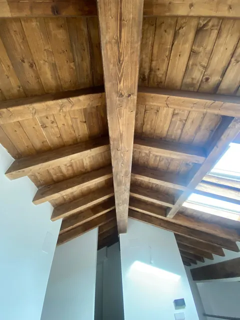
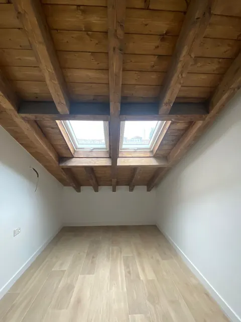
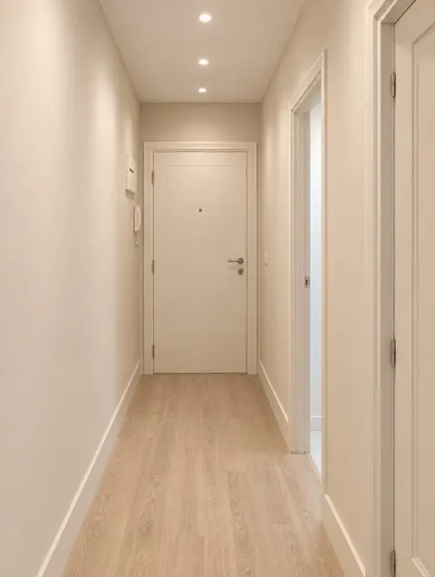
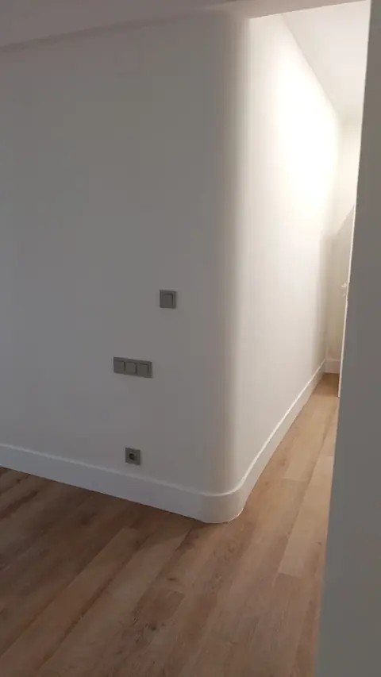
¿Te ha aparecido una bajante de uralita al reformar? Mira cómo la retiramos y dejamos el baño terminado.